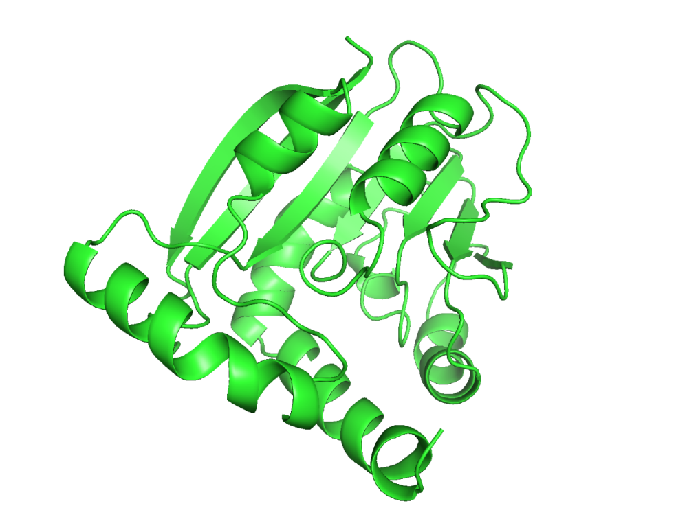
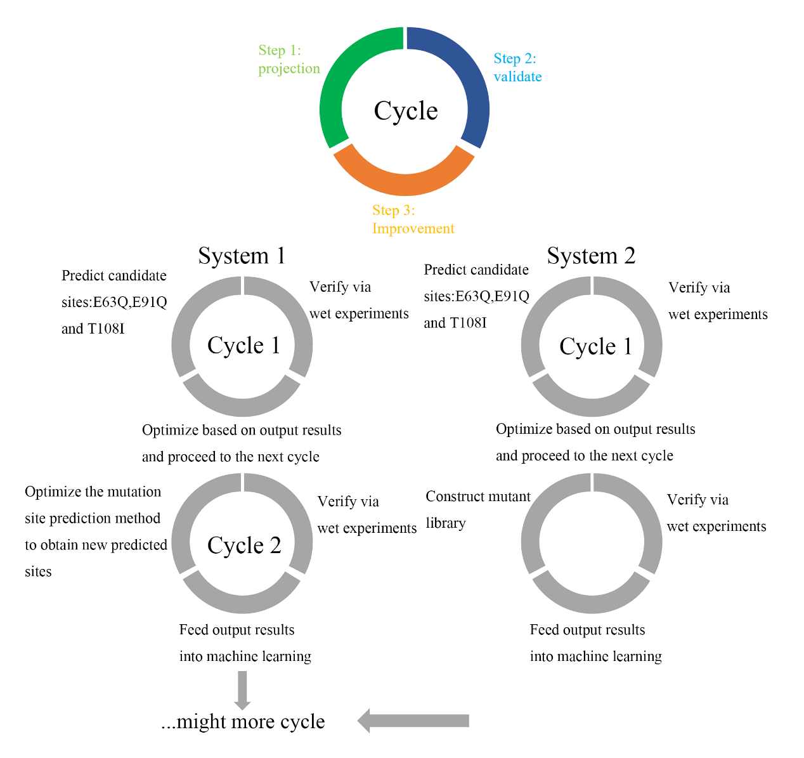

Two Limitations of Wild‑Type Enzyme
- Low affinity toward gaseous H₂S
- Severe substrate inhibition at high sulfide concentration
This serves as the starting point for all subsequent design work.
 Image placeholder
Image placeholderassets/img/loader-art.png
IDEC WIKI · MddH · Marine Sulfur Cycle
Index
IDEC · Semi-rational engineering of marine sulfur-cycle enzyme MddH
Content under continuous update · 2026
Project
This project converts inorganic sulfur pollutant H₂S into organic sulfur platform molecule DMS. We engineer the marine microbial SAM‑dependent methyltransferase MddH. Key residues are identified via homologous sequence alignment and molecular docking. Single and combinatorial mutants are constructed, and activity is characterized using headspace gas chromatography. This page contains five sections: Description · Design · Results · Supplement · Protocol.
Hydrogen sulfide (H₂S) is a toxic inorganic sulfur pollutant massively released during industrial manufacturing. Bioconversion of waste‑gas derived H₂S into dimethyl sulfide (DMS) represents a promising route for sulfur resource recovery: DMS acts as a platform intermediate linking inorganic sulfur to diverse organosulfur chemicals. Downstream, it can be oxidized to dimethyl sulfoxide (DMSO), and also serve as a methyl/sulfur donor precursor for biosynthesis of methionine and sulfur‑containing fine chemicals.
Nevertheless, wild‑type MddH has two bottlenecks: low affinity toward gaseous H₂S, and severe substrate inhibition under high sulfide concentrations, limiting its application in the "inorganic sulfur → organic sulfur" conversion.
MddH is a SAM‑dependent methyltransferase derived from marine microorganisms. It catalyzes two sequential reactions: inorganic H₂S is first methylated to methanethiol (MeSH), and methanethiol is further methylated into DMS. Both steps use SAM (S‑adenosylmethionine) as the methyl donor, with SAH as the byproduct.
H₂S + SAM → MeSH + SAH
MeSH + SAM → DMS + SAH
The reference sequence used in this project originates from Marinobacter litoralis SW-45 (referred to as UE2). This protein shares relatively high similarity with human TMT1A / TMT1B (especially the central and C‑terminal regions), containing a conserved central GxGxG motif and one glutamate residue within the SAM binding pocket (the human homolog has aspartate at this position).
This serves as the starting point for all subsequent design work.
Semi‑rational protein engineering breaks intrinsic enzyme bottlenecks without large‑scale random mutagenesis screening. We first identify conserved functional regions via homologous sequence alignment, then construct the MddH–SAM–H₂S ternary complex model using molecular docking to directly pinpoint key residues inside the substrate binding pocket; molecular dynamics simulations are subsequently used to validate binding conformations, and YASARA virtual mutagenesis calculates folding free energy changes (ΔΔG) to discard substitutions that disrupt protein structure.
UE2 exhibits overly strong SAM binding (estimated −7.9 kcal/mol from early docking). We therefore hypothesize: moderately weakened cofactor binding accelerates catalytic turnover and improves DMS yield. Based on this, affinity ranking via Boltz‑2 selected three sites: E63Q, E91Q, T108I. Single, double and triple combinatorial mutants were constructed for wet‑lab validation.
Why not random mutagenesis? DMS yield requires gas chromatography quantification, which is costly and time‑intensive for high‑throughput screening; for this protein, only AlphaFold predicted structures were available at the beginning, and initial computational predictions may be inaccurate. Thus, this project adopts a combined workflow: computational predictions guide wet experiments, and wet results in turn refine computational models, forming two independent yet complementary cyclic systems.
 Vertical flowchart
Vertical flowchartassets/img/project/design-flow.png
Full pipeline from homology alignment and molecular docking to Route A / Route B consensus scoring and next‑generation candidate selection.
| Variant | ΔΔG (kcal/mol) | Interpretation |
|---|---|---|
| UE2 (Wild type) | — | Control |
| E63Q | 0.79 | Mild destabilization |
| E91Q | 0.82 | Mild destabilization |
| T108I | 0.098 | Nearly neutral |
| E63Q/E91Q | 1.66 | Destabilized (approximately additive) |
| E63Q/E91Q/T108I | 1.53 | Destabilized (weak epistatic compensation from T108I) |
AlphaFold3 predicts the apo homotetramer structure of UE2; molecular docking builds the MddH–SAM–H₂S ternary complex. Boltz‑2 ranks point mutants by binding affinity to select E63Q, E91Q, T108I.
Five variants were constructed and expressed in E. coli. Crude enzyme lysates catalyzed H₂S methylation, and HS-GC quantified DMS. E91Q and T108I exhibited modest activity improvement; E63Q nearly lost activity.
Round 1 prediction relied solely on binding affinity without kinetic evidence (e.g. Km) for SAM binding. Therefore, predictions did not fully translate into activity gains. These results feed into the refined module to launch the next iteration.
Three pre-trained models with distinct mechanisms (ProtSSN, ProSST, TranceptEVE) are combined with PLACER ligand conformational ensemble analysis, plus ThermoMPNN stability cutoff (ΔΔG > +1 kcal/mol rejected directly) and sequence sanity checks to avoid residue numbering errors. Instead of only binding affinity, protein stability and the actual spatial conformation of SAM inside the pocket are considered simultaneously.
Within an 8 Å radius around residues with mild activity improvement in Round 1, 45 residues were selected for saturation scanning, computationally generating 855 single-point mutant candidates. Compared with conventional random mutagenesis, this library is smaller, reducing wet-lab workload and improving efficiency.
Ranked by consensus score, high-priority candidates for near-term validation include I46L, S65T, S44T, V40I, plus E91A/D/N variants for mechanistic investigation.
Iteratively update predictive models with wet-lab data: replace single-metric scoring, add stability cutoffs and ligand conformational gating, and apply sequence validation to prevent numbering errors for more reliable recommendations in subsequent rounds.
Perform pocket saturation scanning around predicted residues to generate a controllable candidate library; outputs feed back into System 1 to support iterative optimization.
Five variants (E63Q, E91Q, T108I, E63Q/E91Q, E63Q/E91Q/T108I) were synthesized by Sangon Biotech (Shanghai) Co., Ltd. After sequence verification, all were expressed in E. coli. Crude enzyme lysates catalyzed H₂S methylation under identical conditions, and product DMS was quantified by headspace gas chromatography. Calibration curve: √Peak Area = 3.1854C − 25.261.
| Strain / Variant | DMS (nmol) | Relative Yield (%) | CV (%) | vs Wild Type (Dunnett) |
|---|---|---|---|---|
| UE-2 (Wild type) | 336.4 ± 2.6 | 100 | 0.8 | — |
| E91Q | 353.5 ± 7.3 | 105.1 | 2.1 | P = 0.0045 (**) |
| T108I | 344.7 ± 7.9 | 102.5 | 2.3 | P = 0.199 (ns) |
| E63Q | 16.4 ± 0.4 | 4.9 | 2.3 | P < 0.0001 (****) |
| E63Q/E91Q | 10.1 ± 2.7 | 3.0 | 26.9 | P < 0.0001 (****) |
| E63Q/E91Q/T108I | 29.2 ± 3.8 | 8.7 | 13.1 | P < 0.0001 (****) |
One‑way ANOVA revealed highly significant differences among the six groups: F(5,12) = 3979.5, P < 0.0001.
Dunnett’s multiple comparison (against wild type): E91Q was significantly higher (+17.1 nmol, adjusted P = 0.0045); T108I showed no significant difference (+8.3 nmol, P = 0.199); All three E63Q‑containing variants were highly significantly lower (−320.0, −326.2, −307.2 nmol relative to wild type, adjusted P < 0.0001).
CV values for samples with measurable activity were 0.8% (WT), 2.1% (E91Q), 2.3% (T108I), 2.3% (E63Q), demonstrating a stable and reliable crude lysate assay system.
The two combinatorial variants carrying E63Q exhibited elevated CV (26.9%, 13.1%), because yields approached the detection limit; however, their maximum replicate values were only 3.9% and 10.0% of wild type, so the conclusion of severe activity loss remains robust.
Whole‑cell batch reproducibility was substantially poorer (WT CV up to 90.6%, nearly 20‑fold fluctuation with suspected single‑point recording anomalies). Quantitative conclusions of this study are therefore based on crude lysate data, and whole‑cell data are only used for qualitative judgment. Initial‑rate kinetic assays will be adopted next to improve data quality.
MeSH and DMS were quantified simultaneously within the same batch of experiments: DMS peak areas for wild type, E91Q and T108I were 2.28×10⁷, 2.02×10⁷, 1.95×10⁷ respectively, whereas no detectable DMS peak was observed for E63Q, E63Q/E91Q and triple mutant; yet these variants still produced MeSH comparable to wild type (1.38×10⁷, 1.67×10⁷, 1.65×10⁷ vs WT 1.63×10⁷).
This preliminarily suggests that E63Q‑containing variants largely retain first‑step methylation activity, while the second step (MeSH → DMS) is severely impaired. This does not necessarily mean E63 directly catalyzes the second step; the mutation may indirectly affect catalysis via local conformational rearrangement. In addition, MeSH peaks in no‑enzyme controls were also high (1.24–1.77×10⁷), indicating substantial background interference. More stringent controls (e.g. heat‑inactivated enzyme, SAM omission) are required for accurate MeSH quantification.

Figure 1assets/img/results/figure-01.png
3D structural model of UE2 (MddH).
 Figure 2
Figure 2assets/img/results/figure-02.png
Refined computational prediction and semi‑rational mutant library construction.
 Figure 3
Figure 3assets/img/results/figure-03.png
Relative DMS yield of each variant normalized to wild type (n = 3).

Figure 4assets/img/results/figure-04.png
Overall pipeline for Route 1 (Validated) and Route 2 (In Progress).
| Abbreviation | Full Name | Definition |
|---|---|---|
| MddH | SAM-dependent methyltransferase | Marine microbial enzyme catalyzing two-step methylation: H₂S → MeSH → DMS |
| UE2 | — | Wild-type reference sequence from Marinobacter litoralis SW-45 |
| H₂S | Hydrogen sulfide | Toxic inorganic sulfur substrate from waste gas |
| MeSH | Methanethiol | Product of first step; substrate for second methylation |
| DMS | Dimethyl sulfide | Organosulfur platform molecule |
| DMSO | Dimethyl sulfoxide | Downstream oxidation product of DMS |
| Tmm | Monooxygenase | Enzyme for future cascade: DMS → DMSO |
| SAM / SAH | S-adenosyl methionine / S-adenosyl homocysteine | Methyl donor and its byproduct |
| ΔΔG | Folding free-energy change | Positive value = mutation destabilizes protein (FoldX / ThermoMPNN calculation) |
| HS-GC | Headspace gas chromatography | Detection method for MeSH and DMS quantification in this project |
| CV | Coefficient of variation | Index describing data dispersion among replicates |
| DBTL | Design–Build–Test–Learn | Iterative closed-loop framework adopted in this project |
| Boltz-2 / PLACER | — | Binding affinity / ligand conformation prediction tools, modules for Route A & Route B |
| ProtSSN / ProSST / TranceptEVE | — | Zero-shot fitness prediction models used for Route B consensus scoring |
Place attachments under assets/files/ with filenames matching the links below for download. Dry-experiment codes and computational datasets will be publicly available on GitHub after upload.
The following workflow matches the Materials & Methods section of the manuscript and can be directly reproduced; key parameters are enclosed in parentheses.
AlphaFold3 prediction of apo UE2 homotetramer structure → molecular dynamics simulation to identify residues of interest → molecular docking to construct MddH–SAM–H₂S ternary complex → FoldX/YASARA ΔΔG calculation to filter unstable substitutions → ranking via Route B consensus scoring.
Inoculate single colony into 5 mL LB medium supplemented with 50 μg/mL kanamycin, incubate at 37 ℃, 190 rpm until OD₆₀₀ ≈ 0.6. Take 200 μL bacterial culture, centrifuge at 12,000 rpm for 10 min and discard supernatant; resuspend pellet in 100 μL 1×TE buffer. Boil in water bath for 10 min → −20 ℃ for 30 min → incubate on ice for 30 min. Centrifuge at 12,000 ×g, 4 ℃ for 10 min; the supernatant is template DNA.
Prepare reaction mixture according to the recipe on the right. Thermal profile: 94 ℃ for 5 min initial denaturation; 30 cycles (98 ℃ for 10 s denaturation → primer Tm for 15 s annealing → 68 ℃ for 1 min/kb extension); final extension at 68 ℃ for 10 min.
1% agarose gel (small/medium/large gel: 0.17/0.34/0.68 g agarose in 17/34/68 mL TAE, gel dye 1.7/3.4/6.8 μL). Mix samples with 6× loading buffer, run electrophoresis at 150–155 V for 20–25 min. After validating target bands, submit samples for Sanger sequencing to confirm successful introduction of mutation sites.
Inoculate seed culture into fresh LB medium, incubate at 37 ℃ for 2.5 h, then hold at 4 ℃ for 0.5 h. Add IPTG to a final concentration of 0.1 mM, incubate at 16 ℃ for 18 h for induction.
Harvest cells by centrifugation at 8000 rpm, 4 ℃ for 10 min. Wash pellet with fresh LB and resuspend in 1 mL PBS. Sonicate on ice (5 s on / 10 s off, total 1 min, maximum 3 cycles). Centrifuge and collect supernatant as crude enzyme solution.
200 μL reaction system: crude enzyme + SAM (1 mM) + MeSH (1 mM). Incubate at 28 ℃ for 3 h. Centrifuge, transfer supernatant into headspace vial and seal. Detect via HS-GC (Agilent 8860B, N₂ carrier gas), integrate peak areas of DMS and MeSH.
Convert absolute product yield (nmol) using calibration curve √PeakArea = 3.1854C − 25.261. Calculate relative activity with wild-type UE-2 set as 100%. Perform one-way ANOVA and Dunnett’s multiple comparison in GraphPad Prism (n = 3).
Replace endpoint readings with standardized initial-rate kinetic assays to reduce batch-to-batch variation. Feed kinetic data back into the active learning module to recommend the next batch of 16–32 variants, closing the DBTL cycle.
| Component | Volume |
|---|---|
| 5× GXL buffer | 10 μL |
| dNTP Mix | 4 μL |
| Forward Primer | 0.5 μL |
| Reverse Primer | 0.5 μL |
| GXL DNA polymerase | 1 μL |
| Plasmid Template | 1 μL |
| ddH₂O | 33.5 μL |
| Total Volume | 50 μL |